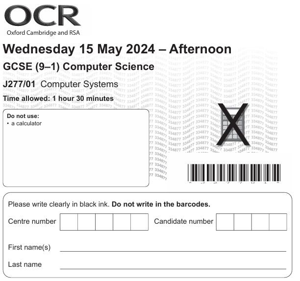
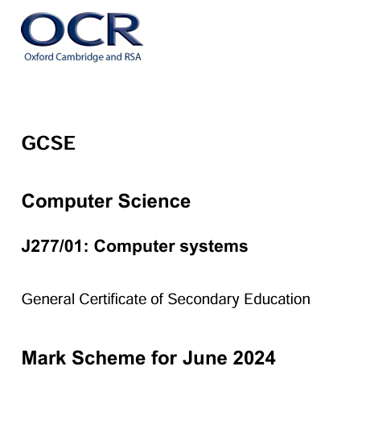
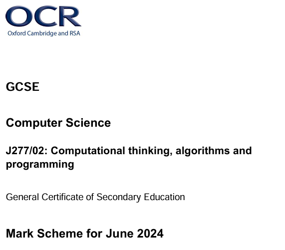

OCR GCSE Computer Science — Past Papers
OCR GCSE Computer Science — Past Papers (2024)

View Paper
J277/01 Computer Systems
Exam Paper — 15 May 2024

View Mark Scheme
J277/01 Computer Systems
Mark Scheme — June 2024

View Paper
J277/02 Computational Thinking
Exam Paper — 20 May 2024

View Mark Scheme
J277/02 Computational Thinking
Mark Scheme — June 2024